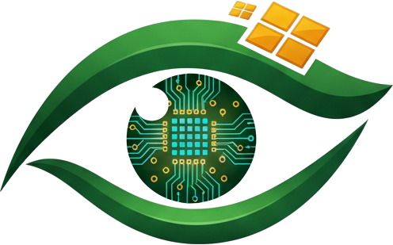

Copies the detection models, the local database and the app onto this machine. It runs once, and needs no internet connection.
A folder named “EcoVisionSentinel” will be created here.
Sentinel can recompile its four AI models for the exact GPU in this machine. It is optional — detection accuracy is identical either way.
Takes about 3–5 minutes. Models are compiled here rather than shipped pre-compiled because the result only works on the GPU that built it. You can skip this now and run it later from Settings — and if a compiled model ever disagrees with the original, it is discarded instead of installed.
Compiling and measuring each model. Leave this running.
Measured on this machine, before and after.
| Model | Before | After | Gain |
|---|